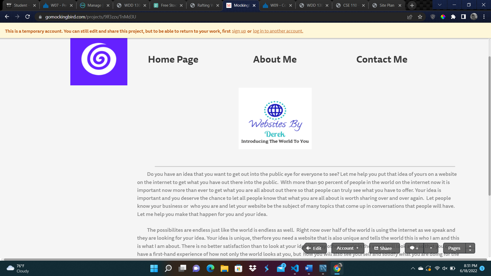
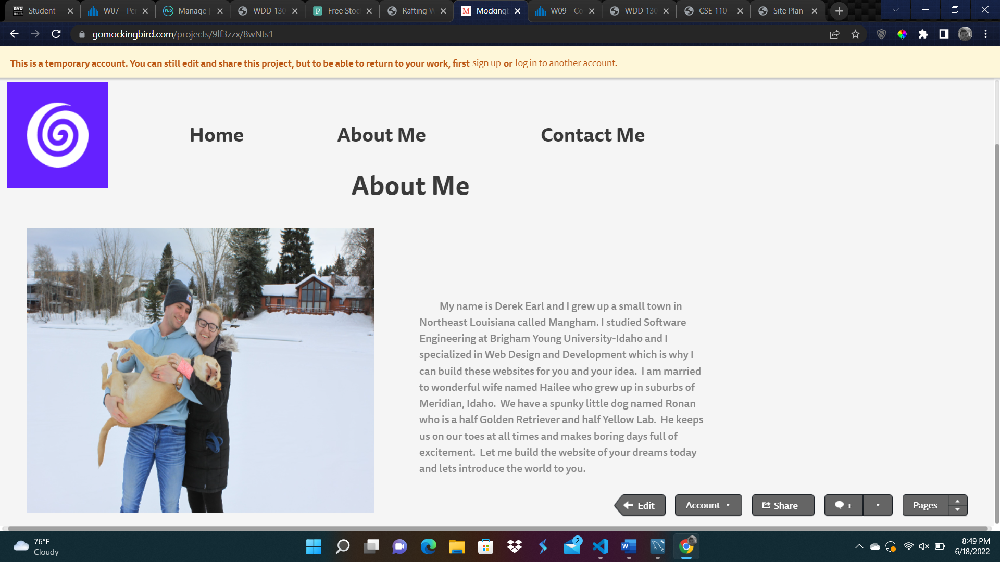
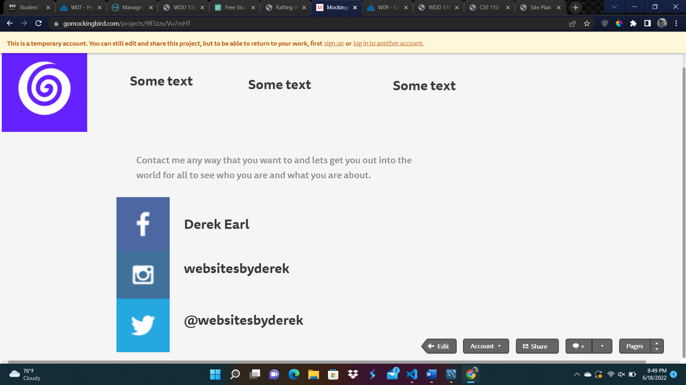

Overview
Purpose
Do you have a business, idea, blog, etc. that you would like to put on a website to get your word out to the world? I can make that happen for you. With a number of possibilities that can be put on a website, the world is waiting to hear from you, and I am that gateway to getting the ideas in your head onto the web so all can see what you truly have to offer. My goal is to bring your idea, business, or whatever you have in your mind to others with professional web building techniques and flawless unique looks personally tailored to you and represented by you to the world. Contact me today and lets introduce the world to you.
Audience
Are you a small business owner, Fortune 500 company enterpenuer, college student with a good startup business idea, or just someone who wants a website just for the fun of it? No matter what the reason is why you want a website built I am happy to do that for you. Lets get your idea out to the audience that you specifically want to advertise to and let them see what you truly have to offer.
Branding
Website Logo
Style Guide
Color Palette
Palette URL: https://coolors.co/396e94-e7c24f-a43312-381d2a-aabd8c| Primary | Secondary | Accent 1 | Accent 2 |
|---|---|---|---|
| [#396E94] | [#E7C24F] | [#A43312] |
Typography
Heading Font: Rock Salt
Paragraph Font: Tapestry
Normal paragraph example
The world we live in today is moving closer and closer to being completely online. Which is why it is important to bring your idea, business, or product on the internet so that people can truly see your work. You deserve the chance to get that work out into the world and unto the internet for all to truly admire your work and your passion that drives you. You did not come as far as you have just have only a small group of people to know about your idea, you truly want the world to see what it is that you are all about. There are unlimited amounts of ideas that the internet has to offer. The actions that are available to create a website are also unlimited, if you can think of it, then it can be put on a website.
Colored paragraph example
The real question is do you have an idea that you are passionate about but, do not have any idea how you want your branding to look? No problem at all! We can sit down together and discuss what it is that you want. We will talk about the audience that you want to advertise to and identify the problem that you may face when coming up with a way to get your idea the way that you always dreamed about to the public for all to see and I will personally work with you and show you what the possibilites that you are able to have access to.
Navigation
Site Map
Content
Home page
Do you have an idea that you want to get out into the public eye for everyone to see? Let me help you put that idea of yours on a website on the internet to get what you have out there into the public. With more than 90 percent of people in the world on the internet now it is important now more than ever to get what you are all about out there so that people can truly see what you have to offer. Your idea is important and you deserve the chance to let all people know that what you are all about is worth sharing over and over again. Let people know your business or who you are and let your website be the subject of many topics that come up in conversations that people will have. Let me help you make that happen for you and your idea. The possibilites are endless just like the world is endless as well. Right now over half of the world is using the internet as we speak and they are looking for your idea. Your idea is unique, therfore you need a website that is also unique and tells the world this is who I am and this is what I am about. There is no better satisfaction than to look at your idea the way other people in the world will look at it, so that you can have a first-hand experience of how not only the world looks at you, but how you will also see yourself and solidfy what you are doing for the world is truly amazing and worth every second that you put into it. You came up with what you are doing to reach all people and now the internet is the way to go about doing that. Did you know that people use the internet for all kinds reasons for more than just one? Often times people are just browsing around on the internet looking at what their interests are. These are things that range from shopping, research, blogging, or just killing time looking for whatever pops up into their minds. Who knows maybe there are people out there in world that are looking for what you are offering and don't even know it. It is a win-win for all sides, you get your idea out into the public and make it aware to all people , and the people benefit from hearing your wonderful idea that could possibly change their lives for the better. Who knows, maybe your idea is the next big step that we take as humanity that brings a impact for good in the world and makes it a better place to live in. We all have a destiny to fufill lets make yours happen today.
Images for the Home page

About Me
My name is Derek Earl and I grew up a small town in Northeast Louisiana called Mangham. I studied Software Engineering at Brigham Young University-Idaho and I specialized in Web Design and Development which is why I can build these websites for you and your idea. I am married to wonderful wife named Hailee who grew up in suburbs of Meridian, Idaho. We have a spunky little dog named Ronan who is a half Golden Retriever and half Yellow Lab. He keeps us on our toes at all times and makes boring days full of excitmenet. Let me build the website of your dreams today and lets introduce the world to you.
Images for the Page 2
Contact Me
Contact me any way that you want to and lets get you out into the world for all to see who you are and what you are about. Phone (208) 701-4355 email websitesbyderek@gmail.com linkedIn Derek Earl facebook Derek Earl instagram Websites By Derek twitter @websitesbyderek
Images for the Page 3


Wireframes
Create three wireframes for your site. One for each page and list them here
Home
[Any additional details about home that the wireframe does not make clear]
[Page 2]
[Any additional details about page 2 that the wireframe does not make clear]
[Page 3]
[Any additional details about page 3 that the wireframe does not make clear]
